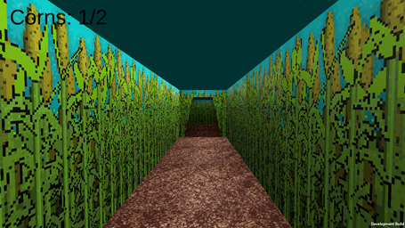
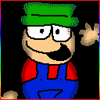
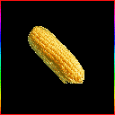

Bambi's Farm | The Expanded ThatCoolModderGuy Wiki
Bambi's Farm is the location "Bambi's Fun Farm!" takes place in.
Table Of Contents
Appearance
Floor Plan
Gallery
Trivia
List Of Pages
Appearance
It appears as a very small corn maze.
Floor Plan
Gallery

Trivia
- Bambi is the only character on the farm.
- There is a barn somewhere near the farm.
List Of Pages:
Characters:

Objects:

Return to Main Page